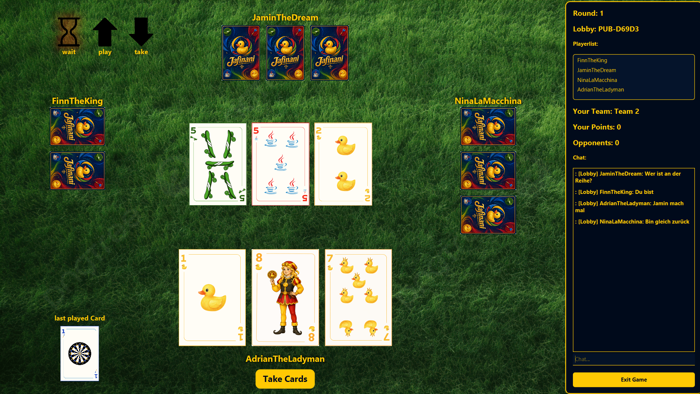

Jafinani
Jafinani ist eine liebevolle Neuinterpretation des klassischen italienischen Kartenspiels Scopa.
Gameplay
Entwickler:
- Adrian Kilchherr
- Finn Briel
- Jamin Voellmy
- Nina Kok
Steuerung:
Karte spielen: Klicke auf die Karte in deiner Hand, die du ausspielen möchtest.Karten aufnehmen: Wähle die gewünschten Karten in der Tischmitte aus und bestätige den Zug mit dem "Take Cards" Button.
Chat: Tausche dich über den Chat in Echtzeit mit deinen Mitspielern aus.
Punkteverteilung:
Scopa: Ein Punkt für das vollständige Leeren des Tisches.Sette Bello: Ein Punkt für das Team, das die goldene Enten-Sieben besitzt.
Die Siebner: Wer die meisten Siebner-Karten gesammelt hat, erhält einen Punkt (bei Gleichstand kein Punkt).
Badeenten-Karten (Denari): Ein Punkt für die Mehrheit an Enten-Karten. Kartenmehrheit: 1 Punkt für das Team mit den insgesamt meisten Karten.